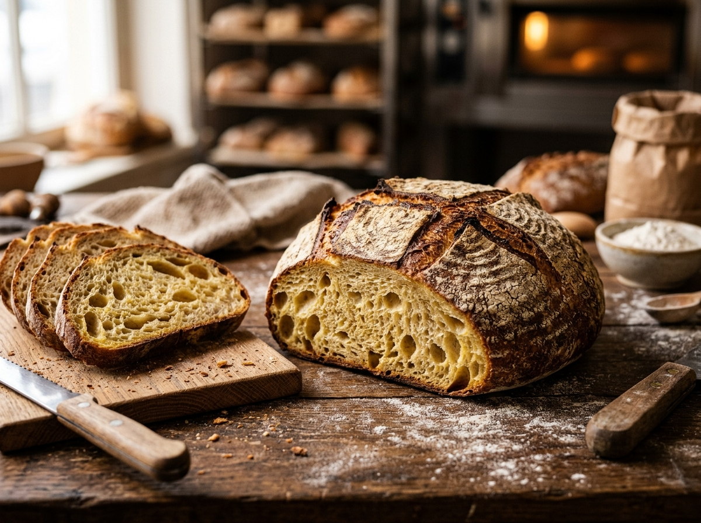
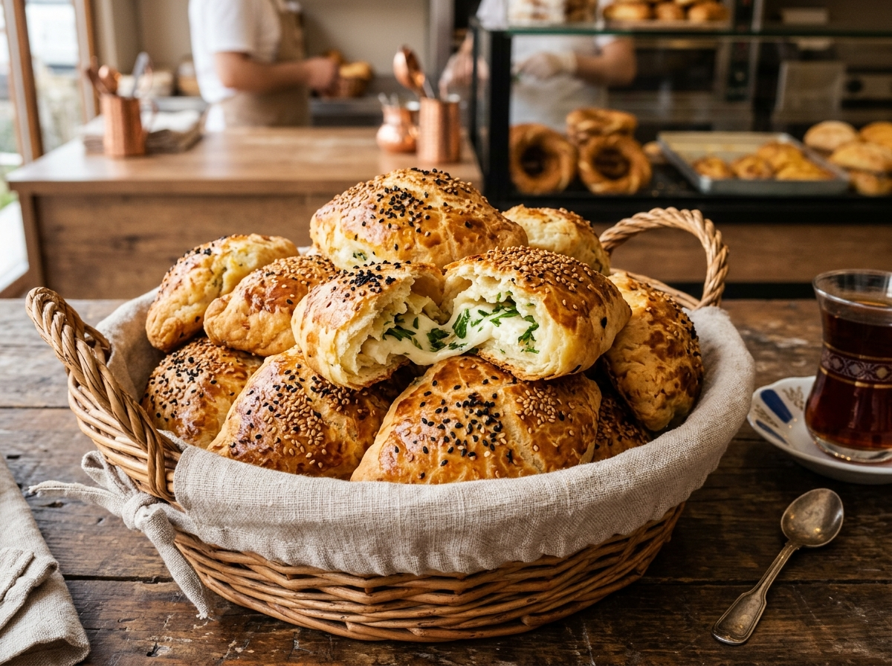
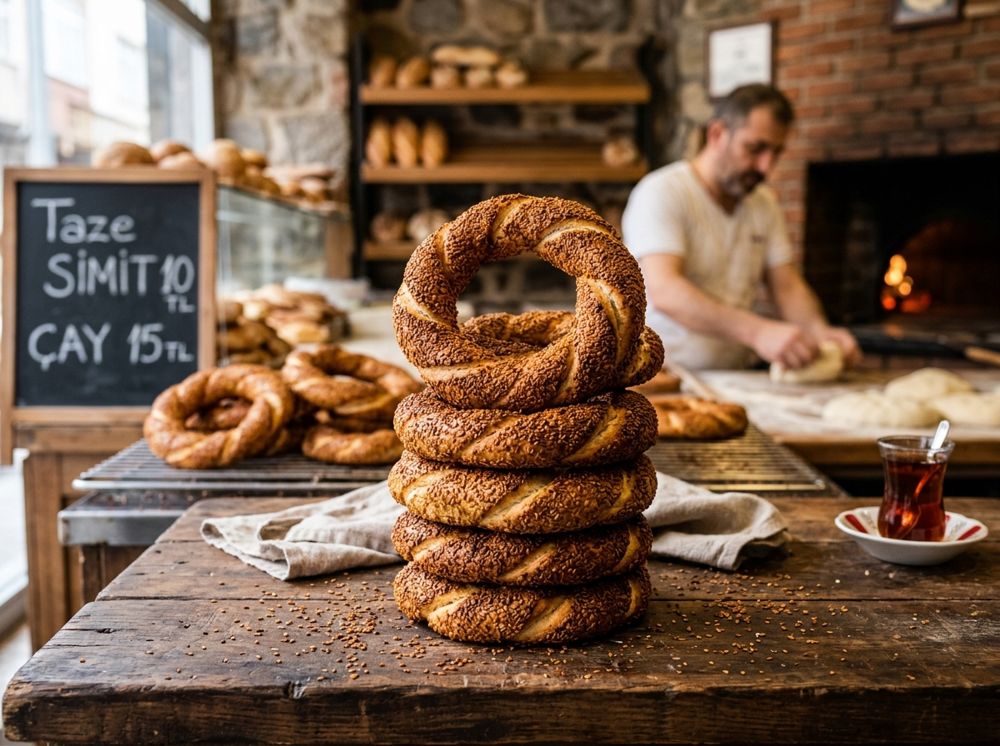

Ekşi mayalı ekmek
Uzun mayalanma ile hazırlanan, çıtır kabuklu günlük ekmek.
Ekmek çeşitlerine bakınMahallemizde her sabah taze hazırlanan ekmek, simit ve poğaça çeşitlerini tanıyın.
Ürünlerimizi inceleyinAna sayfa / Mavi Fırın – Günlük Taze Ekmek

Uzun mayalanma ile hazırlanan, çıtır kabuklu günlük ekmek.
Ekmek çeşitlerine bakın
Sabah kahvaltıları için yumuşak ve taze poğaça.
Poğaçaları keşfedin
Günlük olarak hazırlanan, susamlı klasik simit.
Simit hakkında bilgiİçeriklerimizi anlaşılır biçimde paylaşıyoruz. Ürünlerimiz her gün küçük partiler hâlinde hazırlanır.